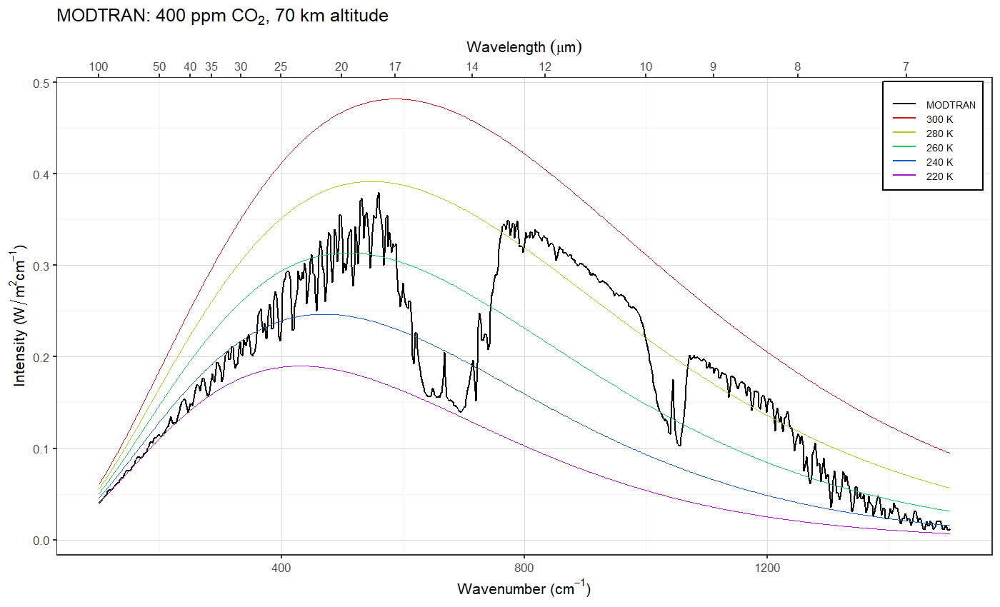
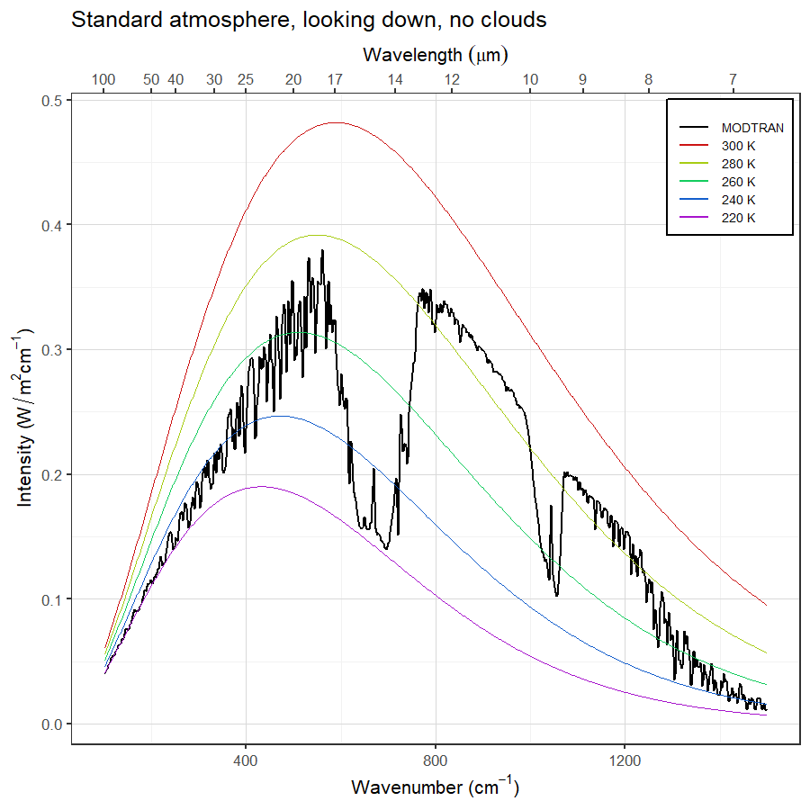
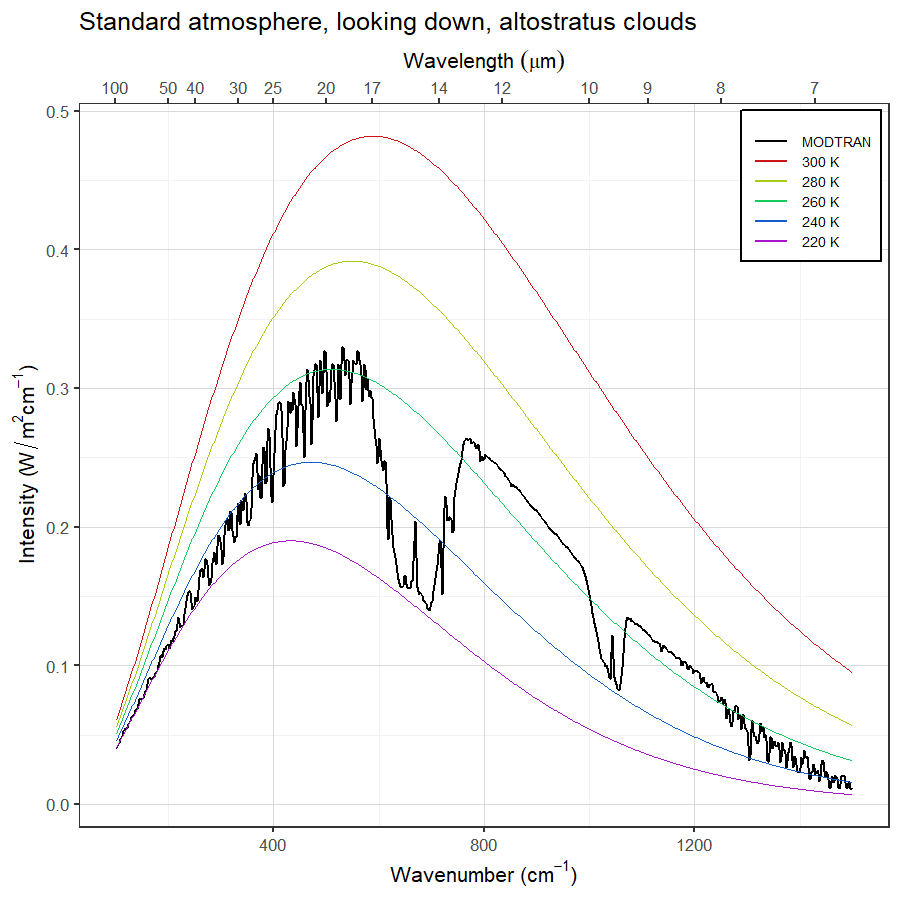
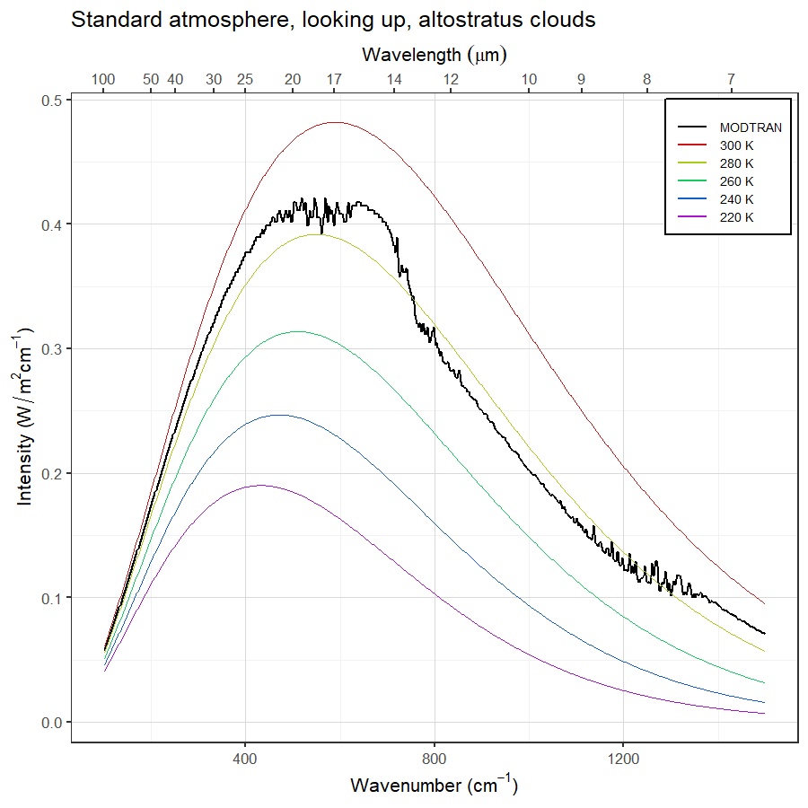
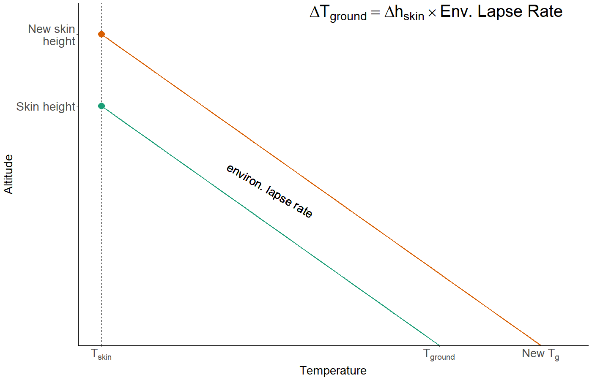
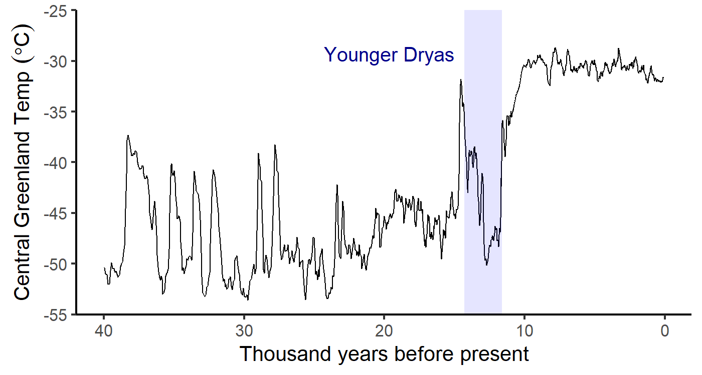

Review for Midterm
EES 3310/5310
Global Climate Change
Jonathan Gilligan
Class #18: 2020-02-17 2020
Outline of Semester
Heat and Temperature
- Temperature is stable when heat is balanced
- Fin = Fout (F = heat flux)
- Radiative equilibrium:
- Fin is shortwave light from sun
- Fout is longwave light from earth
- Where on earth does Fout come from?
- Why is Fin shortwave and Fout longwave?
- Equations (in W/m2): \[ \begin{align*} F_{\text{in}} &= \frac{(1 - \alpha) I_{\text{solar}}}{4}\quad\text{(Absorption)}\\ F_{\text{out}} &= \varepsilon \sigma T_{\text{skin}}^4\quad\text{(Stefan-Boltzmann Law)} \end{align*} \]
Greenhouse Effect
- No greenhouse gases: Bare-rock model \[ T = \sqrt[4]{\frac{(1 - \alpha) I_{\text{solar}}}{4 \varepsilon \sigma}} \]
- Add greenhouse gases:
- Simple model: Layer model (\(\varepsilon = 1\) for all wavelengths)

More Realistic Greenhouse Effect
More Realistic Greenhouse Effect
- With real greenhouse gases, ε varies with wavelength:

MODTRAN:
- MODTRAN calculates emissions and absorption of longwave light in the atmosphere.
- Things that don’t change during a run:
- Heat from the sun
- Set by “locality” of the atmosphere
- Temperature of the ground and every layer of the atmosphere.
-
Set by “locality” of the atmosphere and “temperature offset”
Locale Iout (W/m2) Tground (K) U.S. Standard Atmosphere 267.98 288.2 Tropical 298.67 299.7 Midlatitude winter 235.34 272.2
-
- Heat from the sun
- For every wavenumber, MODTRAN calculates heat emission and absorption up and down at each layer.
MODTRAN:
- Emissivity (\(\varepsilon\)) = absorption
- Fraction absorbed by layer \(= \varepsilon\)
- Radiation emitted by layer \(= \varepsilon \sigma T^4\)
- \(\varepsilon\) small (near zero):
- Little absorption or emission.
- \(\varepsilon\) large (near one):
- Almost all incoming radiation is absorbed
- Emission close to black body at temperature T.
- \(\varepsilon\) is large for wavenumbers where greenhouse gases absorb strongly.
- Greater concentration \(\rightarrow\) larger \(\varepsilon\)
- \(\varepsilon\) is small where there is little absorption
- Atmospheric window
- Sensor sees emission at the temperature of the nearest layer with large \(\varepsilon\):
- Looking down from space:
- highest layer with large \(\varepsilon\)
- In atmospheric window, that layer is near the ground
- With clouds, it’s often the top of the highest cloud
- Looking up from ground:
- lowest layer with large \(\varepsilon\)
- In atmospheric window, there’s no such layer, so you see very little emission
- With clouds, it’s often the bottom of the lowest cloud
Example: Looking Down


Example: Looking Up


Vertical Structure of the Atmosphere
Vertical Structure of the Atmosphere
- Lapse Rate:
- Environmental (ELR): Snapshot of actual atmosphere
- Adiabatic (ALR): Changes as air moves up or down
- Condition for stability: ELR < ALR
- Why does stability matter?
- Greenhouse effect alone would make ELR very large.
- THis would make the earth hotter than it is.
- When ELR > ALR, convection happens
- Convection moves heat around
- Convection reduces ELR until atmosphere becomes stable
- Cools surface
- Radiative-Convective Equilibrium:
- Convection weakens greenhouse effect
- Atmosphere is just at the edge of stability
- Greenhouse effect wants to raise ELR
- Convection wants to reduce ELR
- Greenhouse effect alone would make ELR very large.
Vertical Structure and Greenhouse Effect

Vertical Structure and Greenhouse Effect

Feedbacks
Feedbacks
- Positive: amplify warming or cooling
- Negative: diminish warming or cooling
- Examples:
- Ice-albedo (positive, fast)
- Water vapor (positive, fast)
- Clouds (slightly positive, fast)
- Silicate Weathering (negative, slow)
Cloud Feedback

Silicate Weathering
- Constant CO2 concentration:
- Sources of CO2 = Sinks (removal)
- Silicate weathering = volcanic outgassing
- Raise outgassing:
- CO2 rises
- Temperature rises
- More weathering
- Eventually … weathering = new outgassing
- New equilibrium
- Higher temperature
Silicate Weathering
- Constant CO2:
- Silicate weathering = volcanic outgassing
- One-time pulse of CO2 into atmosphere
- Temperature rises
- More weathering
- Weathering > outgassing
- CO2 drops
- New equilibrium when CO2 returns to original value:
- T returns to original value
- CO2 back at original value
- Weathering = outgassing again
Geochemical Carbon Cycle
Carbon
- Oxidized vs. Reduced Carbon
- Isotopes:
- 12C, 13C, 14C
- What do they tell us?
- What is the evidence that rising CO2 comes from fossil fuels?
Source of CO2: O2 and 13C

Source of CO2: 13C and 14C

Where is Carbon

Carbonate/Bicarbonate Buffering
Buffering reaction
\[ \COO + \water + \carb \rightleftharpoons 2 \bicarb \]
Important points:
- Reaction goes both ways
- At equilibrium left and right are equal (balanced)
- Le Chatlier’s principle
- Add more of something on one side and balance shifts to the other side
- Add more CO2 and reaction converts CO2 and \(\carb\) to \(\bicarb\)
- Lots more carbonate than CO2 in ocean
- Absorb lots more CO2 because of buffering, carbonate
- This consumes carbonate (\(\carb\))
- Ocean acidification as carbonate is depleted
Weathering Reactions
Silicate Weathering Reactions
- Silicate Weathering (Urey Reaction) \[ \ce{CaSiO3} + \ce{CO2} \leftrightharpoons \ce{CaCO3} + \ce{SiO2} \]
- Intermediate (in water): \[ \ce{CaSiO3} + \ce{H2CO3} \leftrightharpoons \ce{Ca^{2+}} + \ce{SiO3^{2-}} + 2 \ce{H+} + \carb \]
- Silicate rocks dissolve into ions in water
- Wash into ocean
- In ocean, living organisms convert ions to \(\ce{CaCO3}\) and \(\ce{SiO2}\).
- Net result: Convert CO2 from atmosphere into rocks at bottom of ocean.
Carbonate Weathering Reactions
- Carbonate Weathering \[ \ce{CaCO3} + \ce{CO2} \leftrightharpoons \ce{CaCO3} + \ce{CO2} \]
- Intermediate (in water): \[ \ce{CaCO3} + \ce{H2CO3} \leftrightharpoons \ce{Ca^{2+}} + 2 \ce{H+} + 2 \carb \]
- Carbonate rocks dissolve into ions in water
- Add carbonate ions to oceans
- Net result:
- No permanent removal of CO2 from atmosphere
- But long-term storage in oceans.
Climates of the Past
- Paleocene-Eocene Thermal Maximum (PETM) (~55 million years ago)
- Pleistocene Ice Ages (~2.8 million to 10,000 years ago)
- Holocene (last ~10,000 years)
- Medieval Warm Period (~1000 years ago)
- Post-industrial warming
Paleocene-Eocene Thermal Maximum
- What was it?
- What important evidence do we see for what caused it?
- What is its relevance to today?

Pleistocene Ice Ages
- What was it?
- What important evidence do we use to study it?
- What do we know about what caused it?
- What is its relevance to today?
Industrial-Age Warming
- What do we know about what caused it?
- What are some lines of evidence that human activity is responsible?
Medieval Warm Period
- What was it?
- What is its relevance to today?

Younger Dryas
- What was it?
- What is its relevance to today?

Global Ocean Conveyor Belt